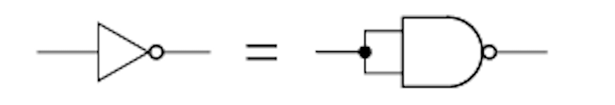
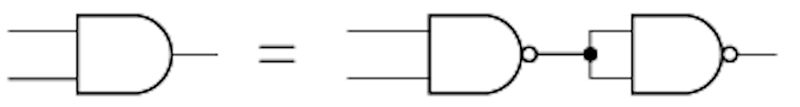

ご入学おめでとうございます! 日比谷高校IT委員会技術部の35R佐藤です。
配布プリント「絶体絶命!? 愛茶くんを助けよう」について、アプローチの仕方と解答を紹介します。
みなさんに配布されたプリントの問題文は、少々難解なものだったかと思います。もしも問題文が理解できず、その影響で解答にすらアプローチできないかもしれません。以下に示すのは、平易な文章で改めた問題文です。
日比谷高校に合格した愛茶(IT)くん。ものすごい解放感のあった春休みを終え、今日は入学式です。実は情報科の春課題として、AND回路とOR回路、NOT回路を用いて足し算だけの計算機を作ることが要求されていましたが、春休みを楽しみすぎてまだなにもやっていません。急いで終わらせねばという焦燥感に駆られた愛茶くんは教科書販売で買った回路キットを開けました。するとなんと……AND回路もOR回路も、NOT回路も入ってないではありませんか。回路キットに入っていたのはNAND回路だけ。しかも大量にあるのでどれだけ使っても使い切ることはなさそうです。
困った愛茶くん。どうにか、NAND回路だけを使ってAND回路やOR回路、NOT回路を補填してあげたいです。どうすれば良いでしょうか。
換言すると、NAND回路だけでAND回路やOR回路、NOT回路を再現することが求められているわけです。
今回の問題の主題となっているのは、AND回路やOR回路、NOT回路を代表とする論理回路です。論理回路は正確に言えば論理素子の組み合わせで成り立っています。論理素子は1つ以上の入力を受け取って出力を返します。たとえば、AND回路(正確にはANDゲートと呼びます)は入力を2つ必要とし、0と1を受け取れば0を返します。論理回路は高校数学で勉強する「集合」という分野と深く関わっています。たとえば、ド・モルガンの法則からOR{NOT(A),NOT(B)} = NOT{AND(A, B)}
だということができます。
テーマとして取り上げたNAND回路は否定論理積素子とも呼ばれており、すべての論理回路はこれを用いて実現することが可能であると知られています。こうすることによって用いるゲートをNANDゲートに限定することができ、設計士やするなるといった利点もあります。こうした背景から、近年、NANDゲートを多用した論理回路も増えています。このような手法をMA法と呼びます。
問題文に記載されたNAND回路の表をじっくり見てみましょう。2つの入力が一致していれば単純にNOT回路と同じはたらきをすることが見てわかります。このことから、NOT回路の再現には以下のように組んでみれば良いとわかります。
NOT回路の作り方がわかると他の回路の再現も容易になりました。そもそもNAND回路は、AND回路を否定したものです。なので逆に、NAND回路をNOT回路で否定すればAND回路になります。先ほどのNOT回路の登場です。以下のようにしてNAND回路を連結すれば、AND回路が再現されます。
さて、最後はOR回路です。OR回路を再現するのがいちばん難しいと思います。NAND回路の表とOR回路の表を見比べてみると、入力が(0,0),(1,1)のときの出力を入れ替えたくなります。ただしかし、入力(1,0),(0,1)のときの出力はそのままであって欲しいので、先ほどのAND回路のときのように簡単にはいきません。
それでは、このように考えてみてはどうでしょうか。2つある入力を両方とも始めに否定しておけば良いのです。解答は、下の写真を参照してください。
なかなか良いNAND(難度)でできたのではないでしょうか。
新入生のみなさんの素晴らしい日比谷高校生活を応援しております!